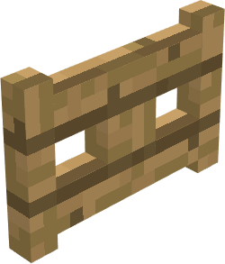

Блоки
Блок - это основная структурная единица, занимающая пространство в мире.
Блок с коллизией - это сплошной объем пространства, через который игрок не должен проходить, который состоит из одной или нескольких ограничивающих рамок, которые представляют собой выровненные по оси кубоиды. Объекты имеют свои собственные ограничивающие рамки, но не рассматриваются как сплошное пространство (за исключением лодок).
Не путать с хитбоксом, который представляет собой объем пространства, с которым игрок может взаимодействовать (атаковать, ломать, интерактировать с помощью правой кнопкой мыши...). Например: у кнопки нет поля для столкновений, так как игрок может пройти через него, но есть поле для попаданий, на которое игрок может нажать. Другой пример: блок барьера имеет перекрывающиеся ограничивающую рамку и хитбокс, но жестко запрограммирован на отсутствие модели.
В этой статье перечислены поля столкновений и свойства всех блоков в версии 1.21.
Блоки с определенными свойствами и/или без полей столкновений представлены в отдельных статьях.
Изображения были взяты из Blockbench или из Minecraft wiki.
Простые блоки
Блоки столкновений, которые состоят из одной ограничивающей рамки. Блоки упорядочены по длине, затем по ширине, затем по высоте.
| Блок | Размер (в блоках) | Высота | Доп информция | Модель |
| Стена (4х сторонняя) | 1 x 1 | 1.5 | Соседние блоки должны быть сплошными, иметь стены или ворота в заборе. | |
| Обычный блок | 1 x 1 | 1 |

|
|
| Песок душ | 1 x 1 | 0.875 | Выглядит как обычный блок, но он на 2 пикселя ниже. Замедляет находящихся на нем мобов. |

|
| Блок эндер-портала | 1 x 1 | 0.8125 | ||
| Стол улучшения | 1 x 1 | 0.75 |

|
|
| Блок кровати | 1 x 1 | 0.5625 | Нижняя часть не выглядит осязаемой, но на самом деле она осязаема. | |
| Плита | 1 x 1 | 0.5 | Можно поставить как верхнюю часть целого блока, или как нижнюю часть целого блока. | |
| Датчик дневного света | 1 x 1 | 0.375 | ||
| Люк (закрытый) | 1 x 1 | 0.1875 | Можно изменить его положение на открытое. Также можно поставить его как верхнюю часть целого блока, либо как нижнюю. | |
| Повторитель | 1 x 1 | 0.125 | ||
| Ковер | 1 x 1 | 0.0625 | ||
| Кувшинка | 1 x 1 | 0.015625 | Толщина кувшинки - 1/4 пикселя. | |
| Слой снега | 1 x 1 | 0, 0.125, 0.25, 0.375, 0.5, 0.625, 0.75, 0.875 | Снег выглядит на 2 пикселя выше чем его настоящая высота. Не смотря на то, что при состоянии 0 у блока нет высоты, его все равно видно | |
| Стена (3х сторонняя) | 1 x 0.75 | 1.5 | Можно вращать (имеет 4 разных варианта). Соседние блоки должны быть сплошными, иметь стены или ворота в заборе. | |
| Наковальня | 1 x 0.75 | 1 | Можно вращать. Выглядит меньше чем есть на самом деле. | |
| Основа поршня | 1 × 0.75 | 1 | Можно вращать. | |
| Стена (2х сторонняя) | 1 x 0.375 | 1.5 | Сосредоточена по центру блока. Можно вращать. Соседние блоки должны быть сплошными, иметь стены или ворота забора. Размещение блока поверх него не приводит к изменению его поля столкновения, несмотря на то, что внешне он был другим. | |
| Забор (2х сторонний) | 1 x 0.25 | 1.5 | Сосредоточен по центру блока. Можно вращать. Соседние блоки должны быть сплошными, иметь стены или ворота забора. | |
| Ворота | 1 x 0.25 | 1.5 | Сосредоточены по центру блока. Можно вращать. Можно переключить на вариант без колизии. |  |
Составные блоки
Блоки, имеющие коллизию, состоящую из двух или более ограничивающих рамок. "За исключением" представляет собой неосязаемую зону, а не осязаемую (проще описать это перечислением всех ограничивающих рамок).
| Блок | Размер (В блоках) | Высота | Доп информация | Модель |
| Лестница (обычная) | Основа: 1 x 1; Верхняя часть: 1 x 0.5 | Основа: 0.5; Верхняя часть: 1 | Можно вращать. | |
| Лестница (внешняя) | Основа: 1 x 1; Верхняя часть: 0.5 x 0.5 | Основа: 0.5; Верхняя часть: 1 | Можно вращать. Зависит от соседних блоков лестницы. | |
| Лестница (внутренняя) | Основа: 1 x 1; За исключением: -0.5 x -0.5 | Основа: 1; За исключением: -0.5 | Можно вращать. Зависит от соседних блоков лестницы. | |
| Рамка эндер-портала (с глазом внутри) | Основа: 1 x 1; Глаз: 0.375 x 0.375 | Основа: 0.8125; Глаз: 1 | Глаз выглядит больше, чем есть на самом деле (выглядит на 8px, на самом деле 6px). | |
| Воронка | Основа: 1 x 1; За исключением: -0.75 x -0.75 | Основа: 1; За исключением: -0.375 | Дно не выглядит осязаемым, но таковым является. Дно на 1px ниже, чем кажется. |
Другие
| Блок | Размер (В блоках) | Высота | Доп информация | Модель |
| Лодка | 1.5 x 1.5 | 0.6 | Сущность. |